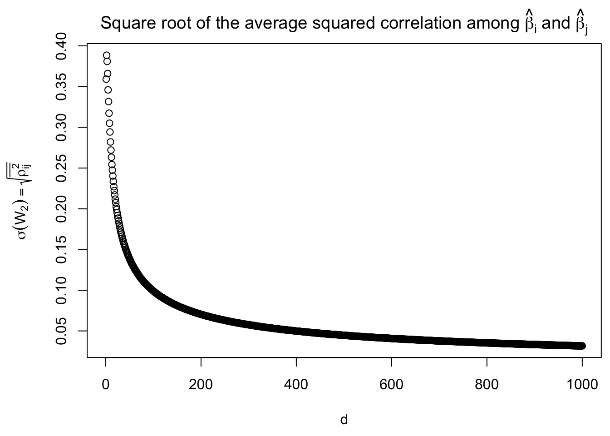

Average Correlation in GTEx: 5 vs 5
Lei Sun
2018-02-03
Last updated: 2018-02-05
Code version: 642b762
Introduction
Severe deflation


Warning in log(matrix_lik_w %*% w.hat): NaNs produced


Severe inflation


\(W_1\)
\(W_2\)
\(\sigma(W_2)\) obtained by the factor model
\(\Sigma = B_{p \times d}B^T + I\)

Session information
sessionInfo()R version 3.4.3 (2017-11-30)
Platform: x86_64-apple-darwin15.6.0 (64-bit)
Running under: macOS High Sierra 10.13.2
Matrix products: default
BLAS: /Library/Frameworks/R.framework/Versions/3.4/Resources/lib/libRblas.0.dylib
LAPACK: /Library/Frameworks/R.framework/Versions/3.4/Resources/lib/libRlapack.dylib
locale:
[1] en_US.UTF-8/en_US.UTF-8/en_US.UTF-8/C/en_US.UTF-8/en_US.UTF-8
attached base packages:
[1] stats graphics grDevices utils datasets methods base
other attached packages:
[1] ashr_2.2-2 Rmosek_8.0.69 PolynomF_1.0-1 CVXR_0.94-4
[5] REBayes_1.2 Matrix_1.2-12 SQUAREM_2017.10-1 EQL_1.0-0
[9] ttutils_1.0-1
loaded via a namespace (and not attached):
[1] gmp_0.5-13.1 Rcpp_0.12.14 compiler_3.4.3
[4] git2r_0.21.0 R.methodsS3_1.7.1 R.utils_2.6.0
[7] iterators_1.0.9 tools_3.4.3 digest_0.6.14
[10] bit_1.1-12 evaluate_0.10.1 lattice_0.20-35
[13] foreach_1.4.4 yaml_2.1.16 parallel_3.4.3
[16] Rmpfr_0.6-1 ECOSolveR_0.3-2 stringr_1.2.0
[19] knitr_1.19 rprojroot_1.3-2 bit64_0.9-7
[22] grid_3.4.3 R6_2.2.2 rmarkdown_1.8
[25] magrittr_1.5 MASS_7.3-47 backports_1.1.2
[28] codetools_0.2-15 htmltools_0.3.6 scs_1.1-1
[31] stringi_1.1.6 doParallel_1.0.11 pscl_1.5.2
[34] truncnorm_1.0-7 R.oo_1.21.0 This R Markdown site was created with workflowr